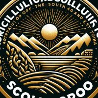
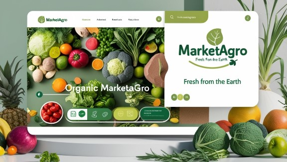
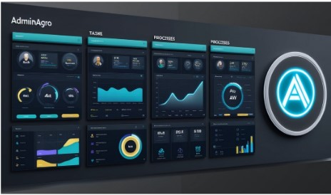
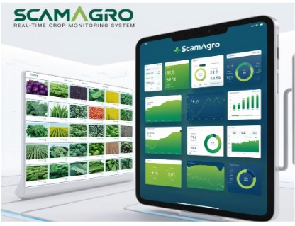

Misión
Transformar digitalmente el sector agrícola orgánico con soluciones tecnológicas sostenibles que optimizan la gestión, producción y comercialización.
Visión
Ser una empresa líder en la digitalización del mercado orgánico, ofreciendo tecnología para mejorar la sostenibilidad de productores y acceso a productos confiables para los consumidores.

Sobre nosotros
Soluciones Agrícolas del Sur y Oriente del Tolima (SOLUAGRO), una empresa dedicada al desarrollo de software especializado para optimizar la gestión, producción y comercialización de productos orgánicos provenientes del campo tolimense.
Nuestro equipo
Lideres en creación y distribución de software especializado en el campo agrícola. Contamos con 20 años de trayectoria y experiencia entregando soluciones agropecuarias de alta calidad.
Juan David Gordillo Rodríguez
Lider y CEO
Cristián Camilo Rodríguez Montealegre
Socio y programador
Softwares
Descubre nuestros innovadores softwares para optimizar la producción y administración de tu negocio agricola.

MarketAgro
Plataforma en línea para la compra y venta de productos orgánicos.
Integración de pagos seguros y gestión de pedidos.
Opciones de filtro y búsqueda avanzada para productos.
Sistema de calificaciones y comentarios para vendedores.

AdminAgro
Gestión centralizada de usuarios y permisos.
Asignación y seguimiento de tareas en tiempo real.
Control de inventarios y recursos administrativos.
Reportes automáticos sobre el progreso de procesos.

ScamAgro
Monitoreo en tiempo real de condiciones del cultivo.
Alertas automáticas para riesgos de plagas y enfermedades.
Análisis de datos sobre clima y suelo para cada parcela.
Informe de rendimiento y salud del cultivo ajustado a tiempo real.